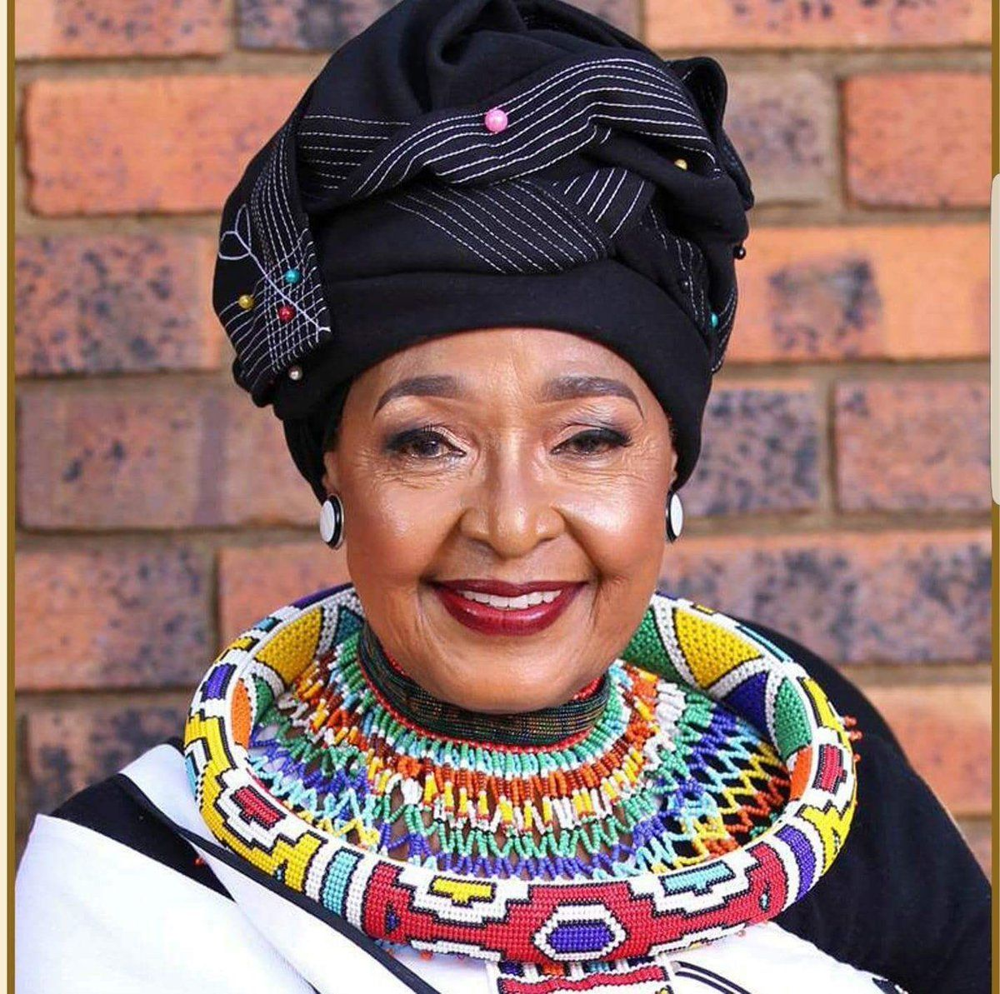

Winnie Madikizela-Mandela
Often called the "Mother of the Nation", Winnie Madikizela-Mandela was a fierce anti-apartheid campaigner whose activism spanned decades. She endured arrests, bannings, and exile while raising public awareness and solidarity for the liberation movement.
Impact: Symbol of resistance and women’s leadership in liberation movements; inspired generations of activists.
Quote: "It's not about being fearless, it's about moving forward despite fear."